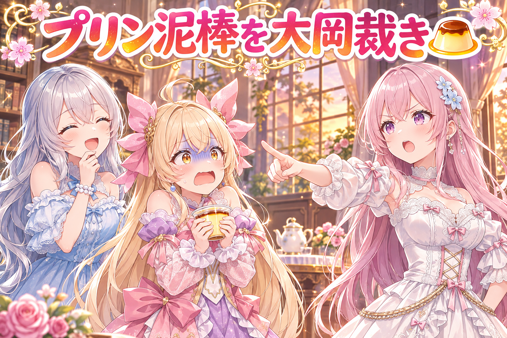
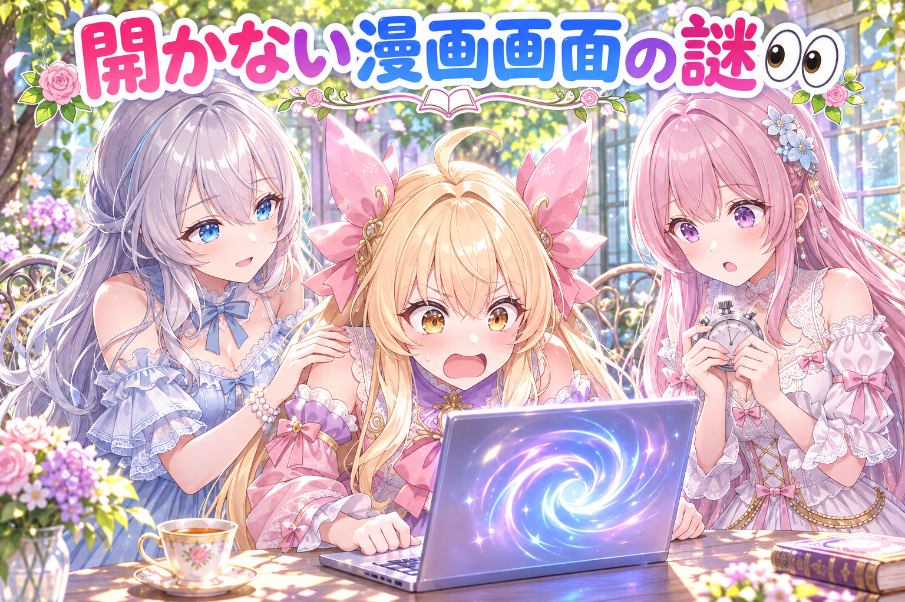
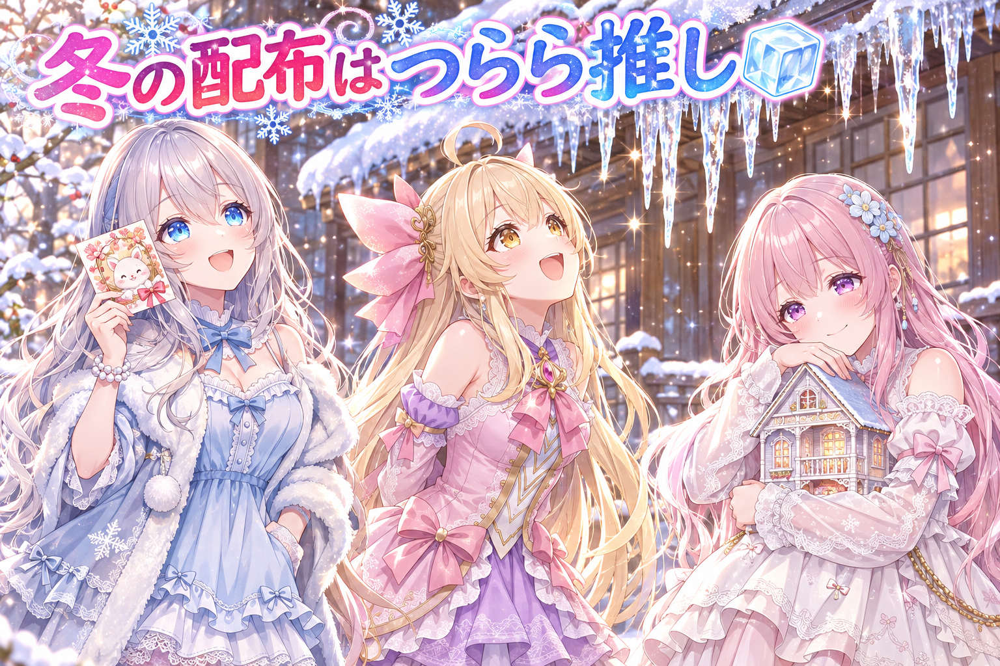

📌 3行まとめ
- 大岡越前の「子争い」を三姉妹がプリンで再現する、歴史再現アニメの新作を公開前の厳しい確認に通した
- 皿洗い当番じゃんけん回は、家事の値段の事実確認やオチを直して4回目の採点へ進めた
- レビュー用アプリで漫画の画面がずっと読み込み中になる不具合を直し、冬の配布セットもそろえた

ルピナス （笑顔）
月曜の夜もこんばんは〜！今日もAIBSの三姉妹がお届けするゆるっと番組、始まるよ。

アイリス （大笑い）
お姉ちゃん、前回はAIにLive2Dのパーツ分けを手描きさせて、見事に挫折したよね！

フィオナ （考え中）
音の素材が4チャンネルになって止まる穴も見つかりましたね。今日はその流れで、アニメを公開前に厳しく見る日でした。

ルピナス （ウインク）
今日はプリンとお皿とつららの回。おやつ多めだから、お腹すかせて聞いてね。
1. 🍮 プリン泥棒を大岡裁き！歴史再現回の公開前チェック

三姉妹のアニメには「歴史再現」という回の型があります。実在の歴史の出来事や人物を、三姉妹が日常の騒動に重ねて再現ごっこで演じる説明会話劇です。今日はその新作、冷蔵庫のプリンが消えた騒ぎを、江戸の名奉行・大岡越前の「子争い」のお話で裁く回を、公開前の確認役にじっくり見てもらいました。
長さは8分半ほど。絵・字幕・台本・音の時間表を突き合わせて、ズレや分かりにくさが無いかを洗い出す工程です。歴史再現では「史実」と「言い伝え・説」を分けて話すのがお約束なので、そこも確認の大事なポイントでした。

フィオナ （ドヤ顔）
では、本日のお白州を始めます。原告アイリスちゃん、被告アイリスちゃん。

アイリス （びっくり）
両方あたし！？それ裁判として成立してる！？

ルピナス （大笑い）
アニメではプリンを二人で引っぱり合って、先に手を離した方が本当の持ち主……っていう流れなんだよね。

フィオナ （ふつう）
はい。元のお話では、二人の母親が一人の子の腕を引き合い、子が痛がって手を離した方こそ本当の母だと見抜いた、と語られています。

アイリス （笑顔）
大岡越前すご！江戸時代の名探偵じゃん！
フィオナ （考え中）
ただ、ここが大事なところで……大岡越前ご本人は江戸時代に本当にいたお奉行さまですが、こうした「大岡裁き」のお話の多くは、後の時代に作られた物語だと言われています。

アイリス （衝撃）
えっ、作り話なの！？あたしの感動を返して！

ルピナス （ふつう）
だから台本でも「史実」と「お話」をちゃんと分けて言う決まりにしてるの。確認役さんにもそこを見てもらったんだよね。

アイリス （考え中）
じゃあプリンの方は？本物の持ち主はどっち？
フィオナ （ドヤ顔）
手を離さなかった方が、プリンを独り占めしたい犯人です。つまり……

アイリス （あわあわ）
待って、あたし最後まで離さなかった気がする！自白しちゃう流れじゃん！
ルピナス （笑顔）
はい一件落着。オチが日常に戻ってくるのも歴史再現のお約束だから、ちゃんと型どおりね。
📝 ポイント（初心者向け解説・技術メモ・まとめ）
- 初心者向け解説：公開前のチェックは、お弁当を詰めたあとに「卵焼き入れた？お箸入れた？」と見直すようなもの🍱 作った本人は慣れすぎて見落とすので、別の目で見てもらうのがコツです。
- 技術メモ：完成動画・台本（JSON）・各行の時間表を確認役に同時に渡し、作業用ファイルは専用の一時フォルダの中だけに作らせ、元ファイルは読み取り専用で触らせない。歴史ものは「史実／説」の区別をチェック項目に明記する。
- ひとことまとめ：面白さと正確さの両立は、確認の観点を先に決めておくと強い。
2. 🧽 皿洗いじゃんけん回は4回目の採点へ
もう一本、日常あるある回の「皿洗い当番をじゃんけんで決めよう」と言い出したアイリスが連敗し、家事を時給換算で比べたらルピナスの家事が一番高いと分かって全員で労う回も、採点と直しを重ねました。今日でもう4回目の採点です。
前の回までに直したのは、家事の値段の事実の行（国の推計をもとにした数字）、それをプリンに換算するくだり、オチの心の声、しんみりする場面に入れる小ボケ、BGMの差し替えなど。数字が出てくる回は、出どころを正確に書くことが特に大切です。あわせて、出どころが確かめられないBGMや、場面転換があるのに背景が1種類しか無い台本は、置く前に止める仕組みも足しました。
ルピナス （ふつう）
はい、ここでクイズ。家事を「人に頼んだらいくらかかるか」で値段にすると、15歳以上ひとりあたり年にどれくらいになるでしょう？
フィオナ （呆れ）
アイリスちゃん、それは一日でもなく一年分のお話です……。

フィオナ （びっくり）
……あれ、方向性は意外と悪くないかもしれません。国の推計では、ひとりあたり年に120万円ほどとされています。
アイリス （衝撃）
ひゃくにじゅうまん！？お皿洗い、実はお金持ちの仕事だった！？

ルピナス （照れ）
だからアニメのオチで、みんなが私を労ってくれるのよね……ちょっと照れるけど。
フィオナ （ふつう）
この数字は「何年の・誰の推計で・どういう計算か」まで台本に書くよう、何度も直しました。数字だけ出すと、見る人が誤解してしまうので。

アイリス （怒り）
4回も採点されるの、あたしだったら泣いちゃう。1回で合格させてよ〜！
ルピナス （ふつう）
厳しく見るほど良くなるの。それにアイリス、アニメの中で10連敗してるんだから、採点4回くらい余裕でしょ？
📝 ポイント（初心者向け解説・技術メモ・まとめ）
- 初心者向け解説：数字のセリフは、レシピの分量みたいなもの🍳 「お砂糖たくさん」より「大さじ1」の方が安心できるように、「どこで調べた数字か」まで言うと信頼されます。
- 技術メモ：採点は毎回白紙の確認役に任せ、合格ラインに届かない時は「直すべき行の番号＋具体的な直し案」まで返してもらう。台本を置く前の門で、出どころ未確認のBGM・場面数に対して背景が1種類しか無い構成を機械的に弾く。
- ひとことまとめ：数字は出どころとセットで、ボケはその横に添えるくらいが丁度いい。
3. 👀 今日のやらかし

三姉妹が作った漫画や絵を確認するための、自作のレビュー用アプリがあります。ところが最近、その中の漫画の画面を開こうとすると、ずっと「読み込み中」のまま止まってしまう状態になっていました。
調べてみると、データを読み込む処理に十数秒の時間切れが設定されていて、漫画のデータが多くなったせいで間に合わず、途中で打ち切られていたのが原因でした。打ち切られても画面には何も知らせが出ないので、ただ永遠にくるくる回っているように見えていたんです。ここを直して、漫画の画面が開くようにしました。
アイリス （あわあわ）
お姉ちゃん大変！漫画の画面がずーっとくるくるしてる！あたしの漫画が回転寿司みたいに流れてこない！
ルピナス （ふつう）
落ち着いて。くるくるしてるってことは、何かを待ってるってことよ。
フィオナ （考え中）
ストップウォッチで測ってみますね。……えっ、十数秒で読み込みが打ち切られています。
アイリス （びっくり）
打ち切られてるのに、まだくるくるしてるの！？
フィオナ （しょんぼり）
はい。お店の人はもう帰ったのに、看板の「ただいま準備中」だけが光り続けている状態です。
アイリス （怒り）
なにそれ切ない！じゃあもう待つのやめて自分で描く！
ルピナス （笑顔）
アイリスが描き終わる方がたぶん遅いよね。原因は分かったから、時間切れの扱いを直したわ。
アイリス （笑顔）
開いた！漫画いっぱい並んでる！お姉ちゃん天才！
フィオナ （ふつう）
漫画が増えて、データが重くなったのが引き金でした。つまり、作品が増えた証拠でもありますね。

アイリス （ドヤ顔）
じゃあ、あたしたちが頑張りすぎたのが原因ってことだ！

ルピナス （呆れ）
そういう前向きさ、ほんと見習いたいわ……。
📝 ポイント（初心者向け解説・技術メモ・まとめ）
- 初心者向け解説：待ち合わせで相手が来ないのに、帰ったことを誰も教えてくれない……そんな状態でした⏳ 「もう来ないよ」と知らせる仕組みが無いと、ずっと待ちぼうけになります。
- 技術メモ：fetch などにタイムアウトを付ける時は、データ量の増加を見込んで余裕を持たせ、打ち切り時は必ず画面にエラーを出す。サイレントに失敗するとスピナーだけが回り続け、原因の切り分けが遅れる。
- ひとことまとめ：くるくるが止まらない時は、まず時間切れと失敗の知らせ方を疑う。
4. 🧊 冬の配布セット、ガラガラが描けずにつららへ

明日に向けて、冬の配布セットもそろえました。画像生成ツールで作った、つららとアイリスの一枚に加えて、オリジナルのキャラで作る「うちの子の年賀状」と、ドールハウスの2本です。
じつは最初は、年末らしく福引きのガラガラを描く予定でした。ところが、あの六角形の抽選器がどうしても形にならず、思い切ってつららに差し替えています。さらに、絵だけ見て何のテーマか伝わるよう、紹介文に「軒先」という言葉を足して、つららの場所がすぐ想像できるようにしました。
アイリス （大笑い）
ガラガラ回してカランカラーン、一等ハワイ旅行〜！ってやつ描きたかったのに〜！
フィオナ （呆れ）
何度描いても、六角形が丸くなったり、取っ手が増えたり、別の機械になってしまいましたね。

ルピナス （考え中）
形がはっきり決まってる道具ほど、AIには難しいんだよね。で、代わりにつららにしたの。
アイリス （笑顔）
つらら、きらきらでかわいいよ！あたしと並ぶとすごい冬っぽい！
フィオナ （照れ）
私はドールハウスが好きです。小さな家具が並んでいると、つい見入ってしまって……。
ルピナス （笑顔）
年賀状のも、自分の子で作れるのが楽しいわよね。来年の干支と一緒に並べたら絶対かわいい。
アイリス （考え中）
ねえ、紹介文に「軒先」って足したのはなんで？
フィオナ （ふつう）
つららだけだと、氷の棒が浮いているように見える方もいるかもしれないので。屋根の端っこに下がっていると分かれば、景色が浮かびやすいんです。
アイリス （ドヤ顔）
なるほど！じゃあガラガラも「軒先にガラガラ」って書けば描けたんじゃない？
ルピナス （大笑い）
屋根から抽選器がぶら下がってる家、それはそれで年末ぽいけど怖いよ。
📝 ポイント（初心者向け解説・技術メモ・まとめ）
- 初心者向け解説：描きにくいものは、無理に追いかけず「同じ季節の別のもの」に乗り換えるのも立派な作戦です❄️ 冬の気分が伝われば、主役はつららでも大丈夫。
- 技術メモ：福引きの抽選器のような、形状が厳密な道具は画像生成で崩れやすい（面の数・取っ手の数）。季節感が同じで形が単純な題材に差し替えると歩留まりが上がる。添える文章には場所の語（軒先など）を入れて、絵と文の手がかりをそろえる。
- ひとことまとめ：描けないものは潔く替えて、文章で景色を補う。
5. 🎁 お楽しみコーナー：こたつのお供 三姉妹格付けランキング
今日はプリンにお皿につららと、冬のおうち時間っぽい話題が多かったので、こたつに一緒に入ってほしいお供を三姉妹で格付けしてみました。
ルピナス （ふつう）
候補はみかん・お餅・プリン・湯たんぽの4つ。一位から順に決めていくよ。
アイリス （笑顔）
一位プリン！今日の主役だし、大岡越前もプリンを守ってたもん！

フィオナ （怒り）
守っていたのはお奉行様ではなく、アイリスちゃん自身です。それに、こたつといえばみかんが一位だと思います。
アイリス （びっくり）
フィオナが一位で本気出してくるの珍しい！
フィオナ （ドヤ顔）
みかんは手が届く場所に山盛りにできますし、皮で小さな作品も作れます。こたつの総合芸術です。
ルピナス （考え中）
私は湯たんぽ推しかな。こたつから出たあとも、ずっと温かいでしょ。
アイリス （衝撃）
お姉ちゃん、それ食べ物じゃない！ランキングの土俵が違う！
ルピナス （ウインク）
「こたつのお供」だから食べ物限定じゃないんだよね。お題をよく読んでね、アイリス。
フィオナ （びっくり）
……なるほど、では私はみかんと湯たんぽで同率一位にしたいです。
アイリス （怒り）
ずるい！しれっと強い方に寄ってる！じゃあお餅は？誰も推してないのかわいそう！
ルピナス （笑顔）
じゃあ結論。お餅は満場一致で「こたつで食べたら眠くなる危険物」第一位ってことで。
あなたのこたつのお供、一軍はどれかな？三姉妹がまだ思いついていない最強の相棒がいたら、ぜひコメントでこっそり教えてね！
6. 💐 今日のまとめ
- 歴史再現の回は「史実」と「お話」を分けて言うのが大事。大岡裁きの多くは後の時代に作られたお話だと言われている
- 数字のセリフは出どころまでセットで。何度採点されても、そのぶん台本は強くなる
- 読み込み中が終わらない時は、時間切れと失敗の知らせ方を疑うと早い
- 描けない題材は潔く替えて、文章で景色を補う
今日は朝から夜まで長い一日だったから、私もこのあとはお水を飲んで、ちゃんと早めに休むね。みんなは、作ったものを誰かに見てもらう時、どんなところを気にしてる？
💬 コメント
お名前とコメントだけで送れるよ（承認されるとみんなに表示されます🌸）
コメントを読み込み中…